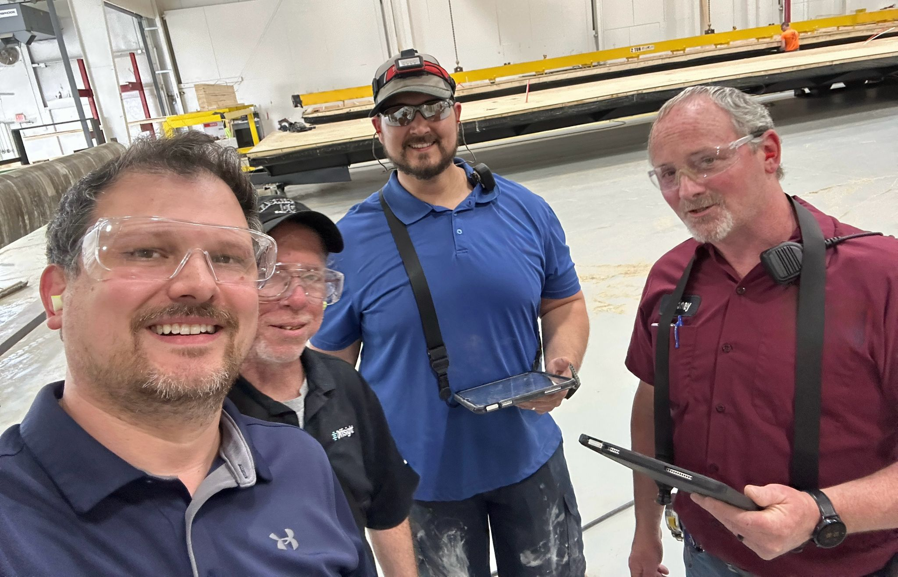
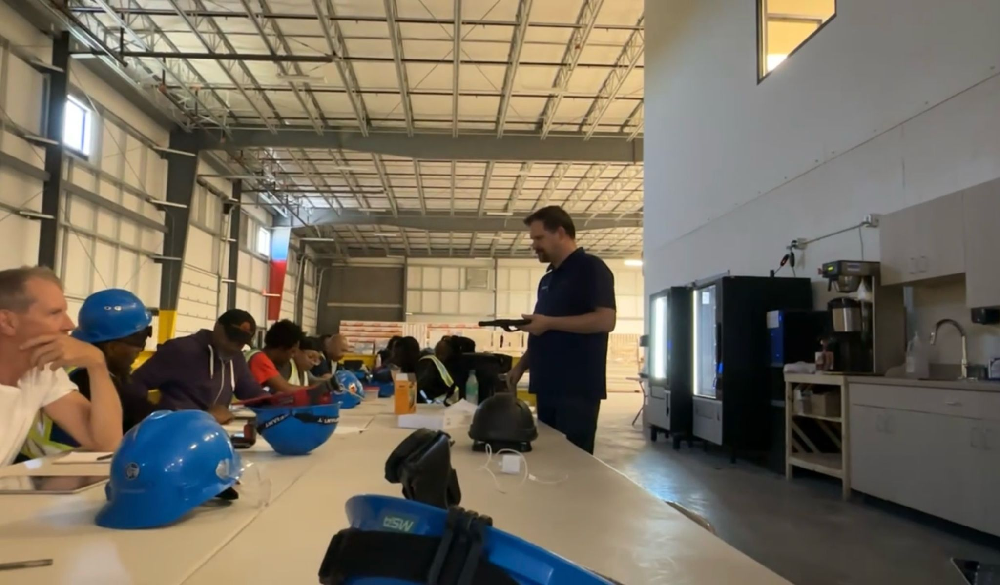
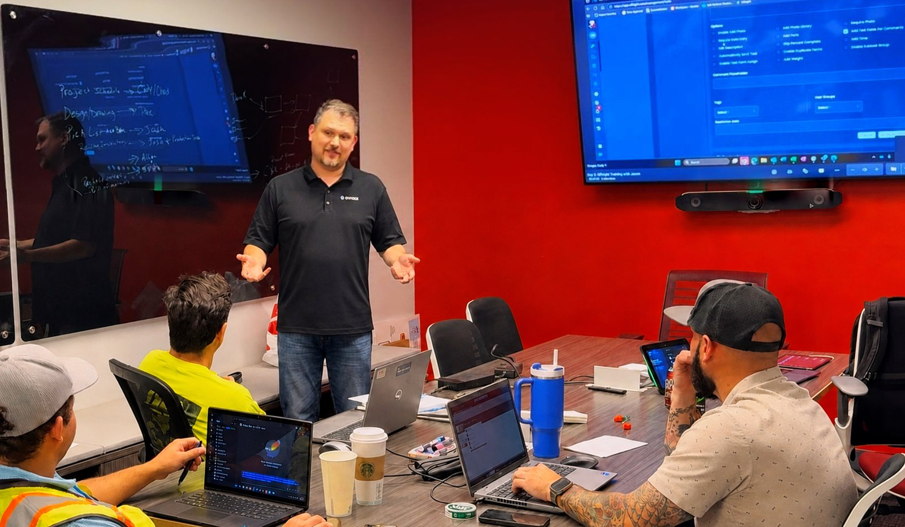
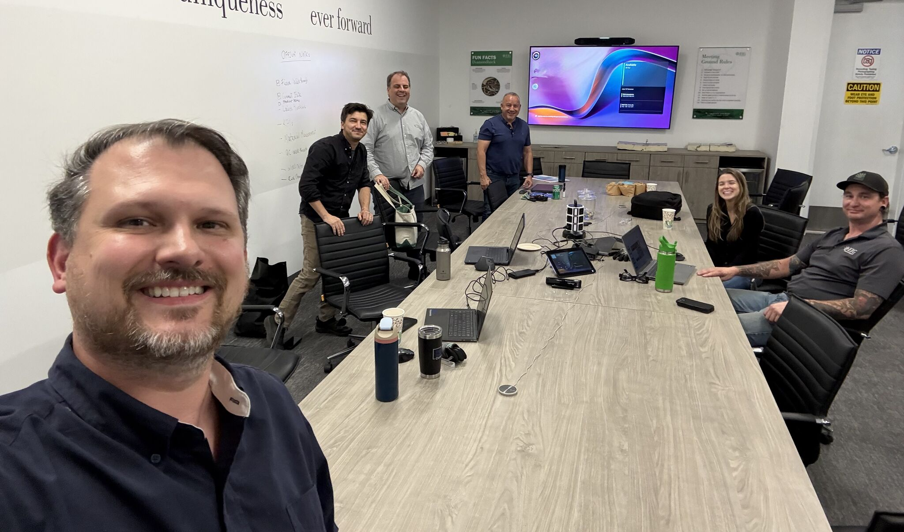

Better factories aren't pushed harder. They're built on better systems.
I help modular and prefab manufacturers improve quality, throughput, and accountability, aligning operations, technology, and people around systems that actually work on the factory floor.
OPERATIONS · QUALITY · TRAINING · IMPLEMENTATION
20+ YEARS LEADING TEAMS
I've built quality systems from the inside and implemented them from the outside.
I chose this industry because it's full of talented people solving hard operational problems with tools that were never designed for how manufacturing actually works. I've focused on closing that gap ever since.
My career spans five disciplines that most people treat as separate jobs: solutions engineering, operations & quality management, training & leadership development, implementation management, and AI engineering. As a Quality Control Manager I built QA systems from the factory floor up; as a Solutions Engineer I now implement operational technology from the outside, so I understand both how factories run and how to make tools serve the way they run.
More recently that's meant building with AI. I use AI engineering tools to create the internal tools, automations, and reporting my work needs, and to bring AI into manufacturing operations itself, where it speeds up analysis, documentation, and decision support without adding headcount. It's the same instinct as always: if the tool doesn't fit the floor, build one that does.
The principle behind all of it: sustainable performance comes from strong systems, not harder pushing. Clear processes, reliable data, disciplined execution, and accountability at every level.
The lessons I've learned from people on factory floors have taught me as much as I've taught them, and that's a big part of why I still love this work.
Five disciplines. One operator.
Most people pick one lane. Jason has led from all five, which is why the systems he builds survive contact with a real production line. Select a discipline to see the work.

Solutions Engineering
Technical discovery, solution demonstrations, and workflow design for modular and prefab manufacturers across North America, translating what the floor needs into what the software does.
- Solution-focused demos with sales teams that increased close rates on targeted accounts
- Custom workflow configurations and integrations connecting engineering, production, and QC
- Client needs translated into product features, driving a 25% lift in user adoption

Operations & Quality Management
Built end-to-end quality assurance systems inside a volumetric modular plant, meeting building codes, engineering specs, and customer requirements, written for the people who run them at shift change.
- Rework reduced 30% through end-to-end QA systems and code compliance
- Layered process audits and corrective action protocols driving continuous improvement
- Streamlined third-party inspections, cutting project completion timelines 15%

Training & Leadership Development
From coaching retail sales teams across a four-county market to training factory crews on new operational technology, building people has been the through-line of a 20+ year career.
- On-site and virtual workshops with crews hitting competency benchmarks in month one
- Sales training, tracking, and goal-setting programs built from scratch and scaled
- Key trainer during a billing migration affecting 600,000+ customers

Implementation Management
End-to-end client onboarding covering requirements gathering, configuration, training, go-live, and post-launch support, run as a managed project with executive stakeholders, not a help-desk ticket.
- Average implementation time cut by more than 50%
- Trusted technical advisor to executives, providing data-driven bottleneck analysis and high-ROI process changes
- Onboarding that lands in weeks, not quarters, and holds after go-live

AI Engineering
Operations people spend years waiting on a dev queue for tools that never quite fit. I stopped waiting. I use AI engineering tools to build the internal tools, automations, and reporting my work actually needs, and to put AI to work inside manufacturing operations.
- Builds internal tools, automations, and reporting with AI engineering tools rather than waiting on development capacity
- Applies AI inside manufacturing operations for analysis, documentation, and decision support for production and quality teams
- Brings an operator's judgment to it: the output has to hold up on the floor, not just in a demo
Sustainable performance comes from strong systems, not harder pushing.
Clear processes, reliable data, disciplined execution, and accountability at every level. The same principle whether it is a quality system, a software rollout, or a crew learning a new station.
One implementation, start to finish.
A proven implementation approach refined through real manufacturing projects, focused on understanding factory operations, configuring the software around the workflow, and making sure the team is confident long after go-live.
Four days on their floor
A panelized manufacturer was running production off memory and paper on the production floor. Walked every station, timed the handoffs, and mapped where information actually died between engineering and production.
Built to match the line
Digital data capture, stations, QC checkpoints, and material tracking configured in week one, modeled on the sequence the crews already worked.
Crews owning it by week four
Supervisors trained first so they could coach, then operators in station. Competency measured against benchmarks, and the rollout held after going live.
Twenty-five years of building teams, systems, and results.
Select a role to expand it.
- Delivered operational excellence consulting to modular and prefab construction clients, aligning software capability with operational goals to improve efficiency and reduce errors.
- Led end-to-end client onboarding, from requirements gathering and configuration through training and post-launch support, cutting average implementation time by over 50%.
- Partnered with product and development teams to translate client needs into feature updates, driving a 25% increase in user adoption across key accounts.
- Conducted on-site and virtual workshops, with participants achieving competency benchmarks within the first month of training.
- Designed customized workflow configurations and integrations connecting engineering, production, and quality control.
- Acted as trusted technical advisor to stakeholders, using data-driven analysis to identify bottlenecks and recommend high-ROI process changes.
- Collaborated with sales teams on solution-focused demonstrations, increasing close rates on targeted accounts.
- Developed end-to-end quality assurance systems ensuring compliance with building codes, engineering specs, and customer requirements, reducing rework by 30%.
- Established layered process audits and corrective action protocols driving continuous improvement across production lines and service operations.
- Coordinated engineering, production, and third-party inspectors to streamline inspections, cutting project completion timelines by 15%.
- Created digital process tracking and reporting tools enabling real-time quality performance monitoring across departments.
- Built and led cross-functional quality and service teams, fostering a culture of accountability and continuous improvement.
- Served as change management leader, improving production throughput without sacrificing quality standards.
- Designed and rolled out customer service follow-up procedures that lifted post-delivery satisfaction scores by 20%.
- Coordinated service resolution across builders, production, warranty claims, and field crews.
- Built a single-store operation toward multi-store scale, managing employees, inventory, purchasing, vendor relationships, and marketing.
- Increased sales 15%+ across every key performance indicator and grew profits 25%+ year over year.
- Launched a business-to-business IT solutions venture as Business Solutions Consultant.
- Grew a low-producing territory into a multi-million dollar book of business with consistent growth, total sales up 38% year over year in 2015.
- Signed the largest account in the Southeast coastal territory in 2016.
- Supported builder clients with estimating, marketing, and dedicated account service.
- Trained, coached, and held accountable retail teams across a four-county North Carolina market; built sales training and tracking programs from scratch.
- Key contributor implementing new billing systems during a migration of 600,000+ customers, covering training, troubleshooting, and escalations across multiple locations.
- Alltel Sales Gold Circle winner, top sales in a three-county region and top ten market-wide.
Crews, kickoffs, and shop floors across North America.
Select any photo to enlarge · Crews, kickoffs, and shop floors across North America
"Jason is intelligent, hard working and a creative problem solver, with a willingness and ability to learn and apply advanced Quality and Lean concepts. His grasp of systems, programs and concepts is outstanding."
"Jason is a true professional who possesses knowledge, integrity and people skills that are rare in any industry."
Certifications
Education
Honors
Let's talk about what your floor is telling you.
Whether you're launching a line, tightening quality, rolling out new operational technology, or looking for a speaker who's lived it, I'm glad to compare notes.